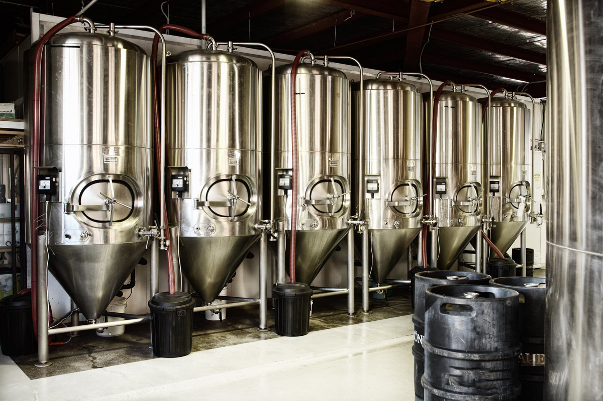

Пивоварня
Пивоварня
Виробництво пива — складний і тривалий процес, що складається з кількох нетехнологічних циклів: виробництва солоду, отримання пивного сусла, зброджування сусла пивними дріжджами, доброджування, фільтрація пива і розлив.